Peanut Butter Chocolate Pinwheel Cookies
 ~ raw, vegan, gluten-free ~
~ raw, vegan, gluten-free ~
If I were forced to choose between chocolate and peanut butter, I would choose chocolate… no peanut butter… no chocolate… aahhh, I really don’t see a need for having to choose. Why can’t we enjoy both in one cookie… oh we can!
With these cookies, everyone is happy and nobody has to make a choice. And best of all, you will LOVE the peanut butter aroma that the dehydrator puts out!
If you are looking for a project to make with young ones, put this recipe on your list. The kids will love combining the two doughs, seeing the patterns that emerge as you slice the logs.
This recipe would also make a wonderful gift. Though the rolling process is not complicated, I find that many people are a bit intimidated by it. So, why not do it for them? You make the dough and assemble the log, then the recipient just slices and dehydrates them. Just an idea. :)
I want to share with you a few tips that I have learned over the years when making this recipe. In order to get that spectacular swirl and shape, you need to remember a few things. First off, make sure that you roll each layer the same thickness. This will give it a unified look throughout the cookie.
When the time comes to rolling the two layers together into a log shape, make sure you roll it even and tight. This will help eliminate a hole from forming in the center of the cookie. If you notice a hole running down the center of the log when slicing it, it’s because you didn’t roll it tight enough. You then know better for next time.
Next, freeze the log overnight if you have the time. If the log is soft when slicing it, the log will start to collapse and create an oblong cookie. Minor detail, but if you want to create that perfect pinwheel effect… take heed of my advice. :) I think that’s about it. I hope you enjoy the process of making this cookie. Please comment below. blessings, amie sue
Chocolate Layer:
- 2 1/2 cups (400 g) raw almonds, soaked & dehydrated
- 1/2 cup (54 g) ground flax seeds
- 1/2 cup (45 g) raw cacao powder
- 1/3 cup (73 g) cold-pressed olive or coconut oil, melted
- 1/3 cup (77 g) water
- 1/3 cup (106 g) raw agave nectar or maple syrup
- 1 Tbsp (12 g) vanilla extract
Peanut Butter Layer:
- 3 cups (360 g) gluten-free, rolled oats, soaked & dehydrated
- 1 tsp (6 g) Himalayan pink salt
- 1 cup (256 g) natural peanut butter
- 1/4 cup (77 g) maple syrup
- 1/4 cup (80 g) raw honey or raw coconut nectar
- 1/4 cup (44 g) raw cold-pressed coconut oil, melted
- 1 1/2 tsp (5 g) vanilla extract
Preparation:
Chocolate Layer:
- Place the almonds in the food processor, fitted with the “S” blade. Process until the almonds turn into a small crumbly flour.
- Add the ground flax and cacao powder and pulse together just until combined.
- As the food processor is running add in the oil, water, sweetener, and vanilla. Process until well blended.
- Some people don’t like the taste of dehydrated coconut oil, if this is you, use olive oil.
- Be careful that you don’t over-process the batter or it will become too oily.
- Place the batter in the freezer while you make the peanut butter layer.
- When ready to roll out, place the dough ball between 2 pieces of plastic wrap and roll out to 1/4″ thick.
- I rolled mine out to be roughly 15″ long x 10″ wide.
Peanut Butter Layer:
- Place the raw oats and salt in the food processor and process until it becomes a fine powder.
- If you own the Vitamix dry container, use that to get the oats down to a nice flour.
- Add the peanut butter, agave, honey, oil, and vanilla. Process until the batter sticks together when pinched.
- This batter doesn’t require any fridge time, unlike the chocolate batter.
- I used fresh ground peanut butter from the store. It wasn’t raw.
- Place the dough ball between 2 pieces of plastic wrap and roll out to 1/4″ thick.
- Roll out nice and even. Peel the top sheet off, exposing a beautiful sheet of peanut butter!
- I rolled mine out to be roughly 15″ long x 10″ wide. You want both layers should be about the same size.
 Assembly:
Assembly:
- Lay the peanut butter layer on top of the chocolate layer, now peel the teflex or wax paper off of the peanut butter.
- Using the bottom non-stick sheet that the chocolate is rolled out on and start to roll the two batters together.
- Once rolled nice and tight, cover with plastic wrap and place it in the freezer for about 30 minutes or until REALLY firm.
- Having the log firm will aid in slicing.
- I recommend placing the rolled batters on a cookie sheet or something flat as it is “mold-able” and bendable at this stage.
- Remove from the freezer and place on a cutting board.
- Slice into 1/4″ thickness.
- Use a SHARP non-serrated knife.
- Place on the mesh sheet that comes with the dehydrator.
- Dehydrate at 145 degrees for 1 hour, then reduce to 115 degrees (F) and continue the dehydration process for roughly 6-8 hours.
- Store cookies in an airtight container. They should keep 5-7 days on the counter and up to a month in the freezer.
- Be sure to place parchment or wax paper in between layers so they don’t stick to one another.
The Institute of Culinary Ingredients™
- To learn more about maple syrup by clicking (here).
- Raw honey isn’t vegan but I still use it now and again. Read (here) why I like to.
- What is raw cacao powder?
- What is Himalayan pink salt and does it really matter? Click (here) to read more about it.
- Is coconut butter the same as coconut oil? Click (here) to find out.
- Are oats gluten-free? Yes, read more about that (here).
- Are oats raw? Yes, they can be found. Click (here) to learn more.
- Do I need to soak and dehydrate oats? Not required but recommended. Click (here) to see why.
- Learn how to grind your own flaxseeds for ultimate freshness and nutrition. Click (here).
Culinary Explanations:
- Why do I start the dehydrator at 145 degrees (F)? Click (here) to learn the reason behind this.
- When working with fresh ingredients it is important to taste test as you build a recipe. Learn why (here).
- Don’t own a dehydrator? Learn how to use your oven (here). I do however truly believe that it is a worthwhile investment. Click (here) to learn what I use.
-
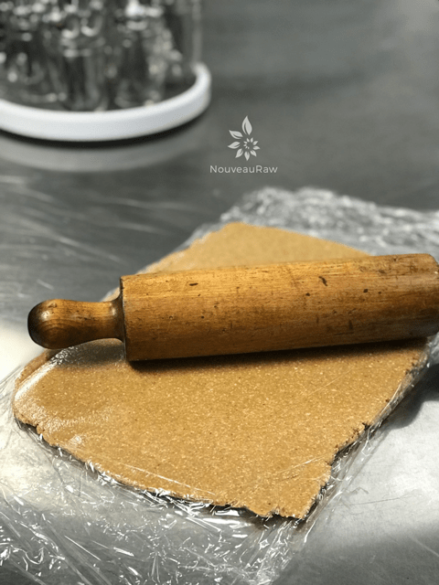
-
Roll out the peanut butter layer.
-
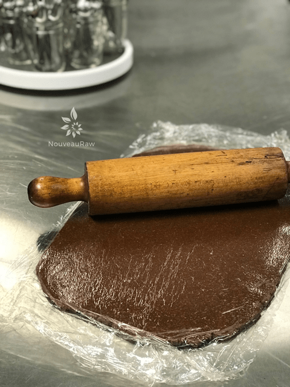
-
Roll out the chocoalte layer.
-
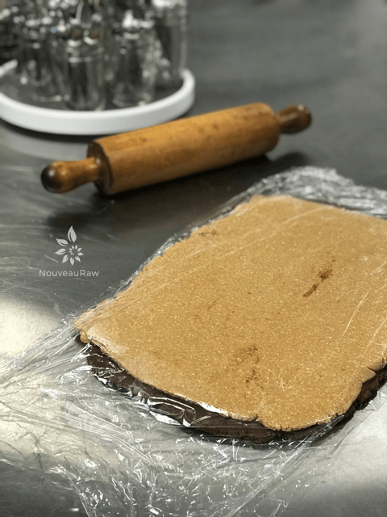
-
Transfer the peanut butter layer on top of the chocolate layer.
-
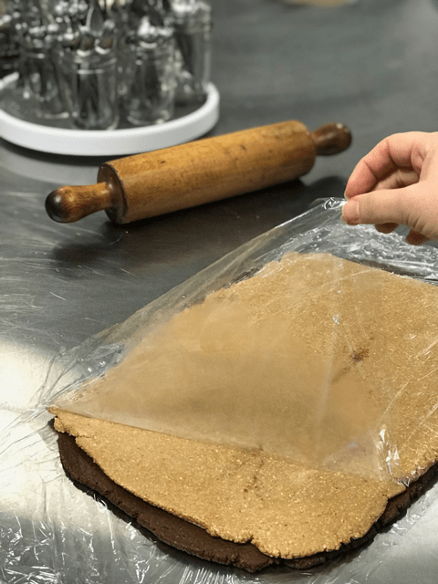
-
Remove the top sheet of plastic wrap.
-
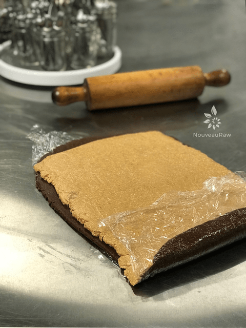
-
Using the edge of the bottom piece of plastic, start to roll the log away from you.
-
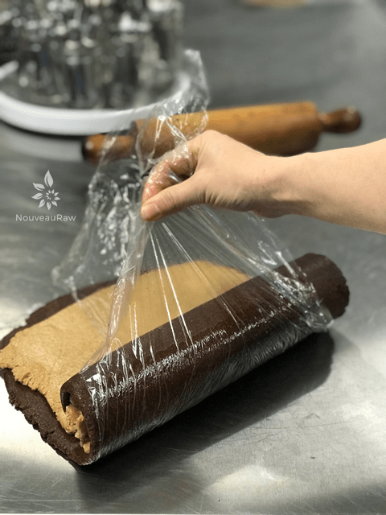
-
Keep it tight as you roll. You will use your other hand to help guide. My other hand had to take a photo.
-
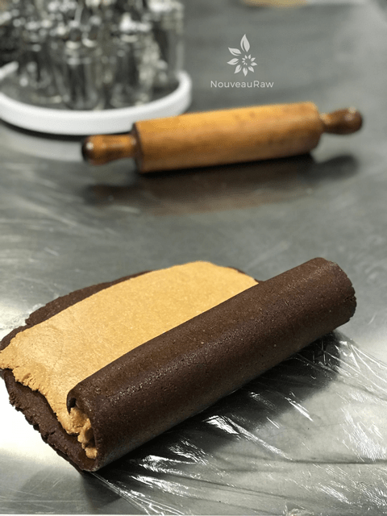
-
I pulled the plastic back just to show you how nicely it is coming along.
-
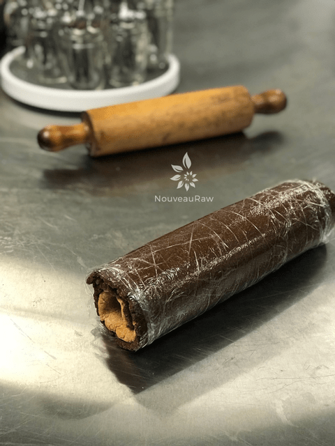
-
Roll it all the way to the other end. Wrap in plastic and freeze.
-
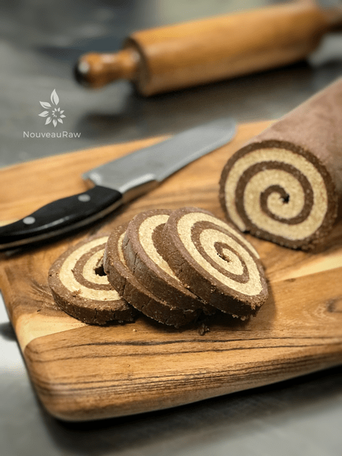
-
Remove from the freezer and slice.
-
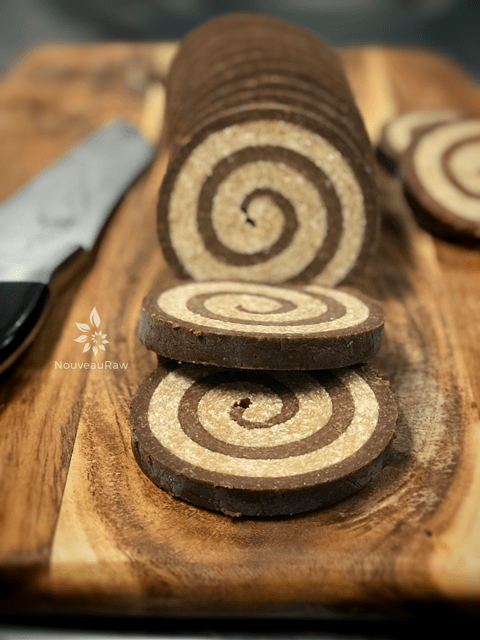
-
Start with a sawing action, then press the blade through, nice and steady.
-
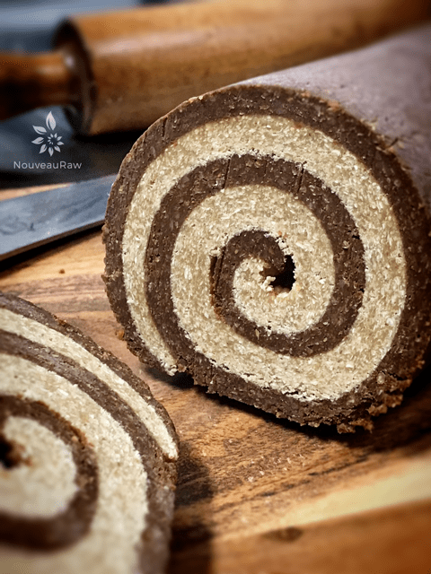
-
Tip: make sure the roll is frozen so you can cut nice circular shapes.
-

© AmieSue.com